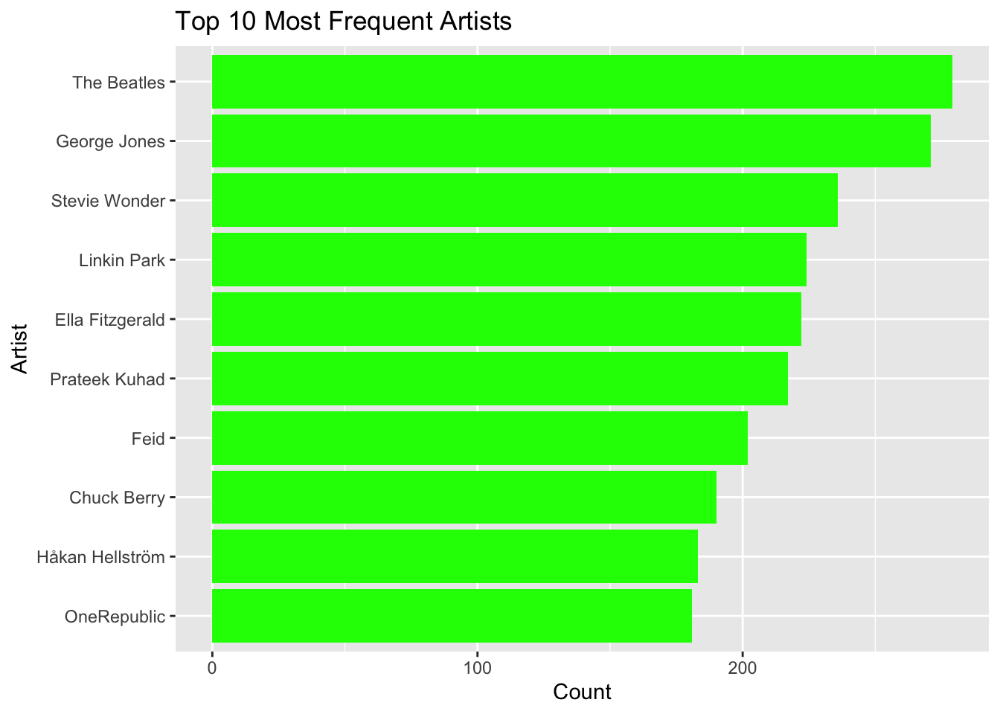
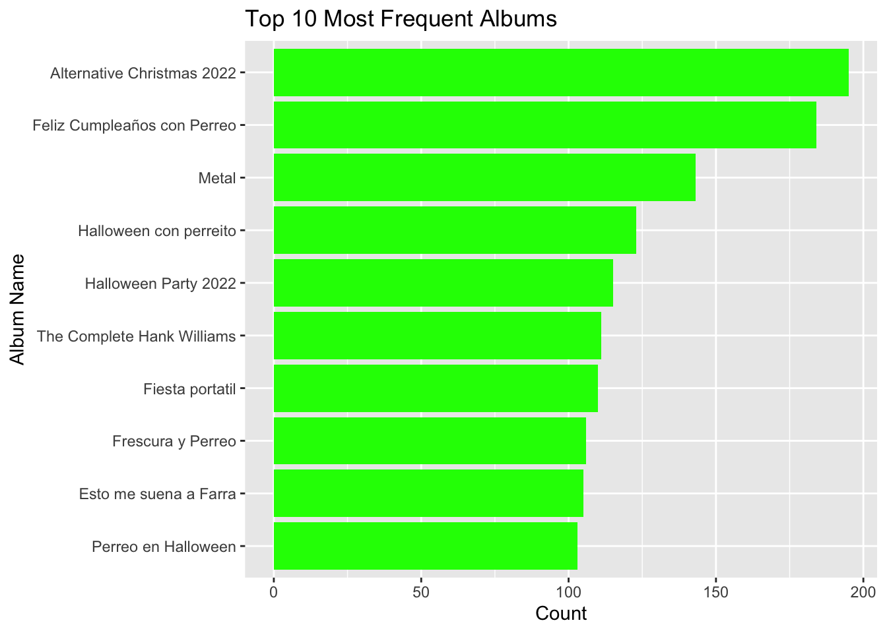
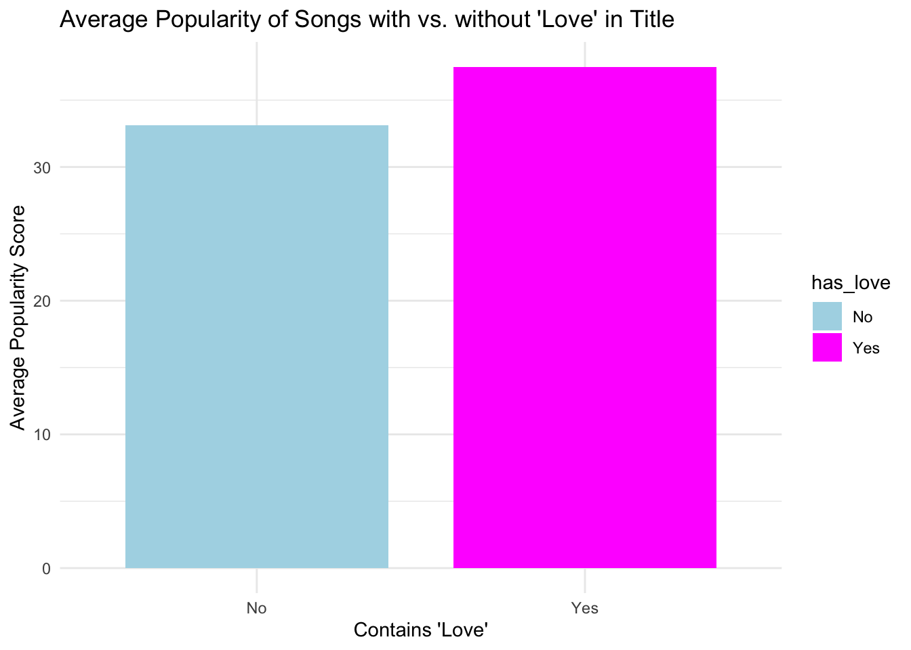
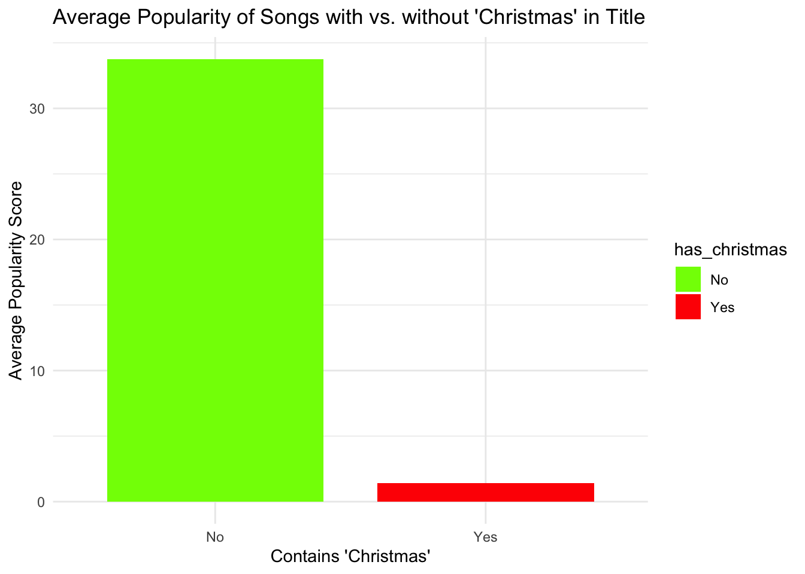
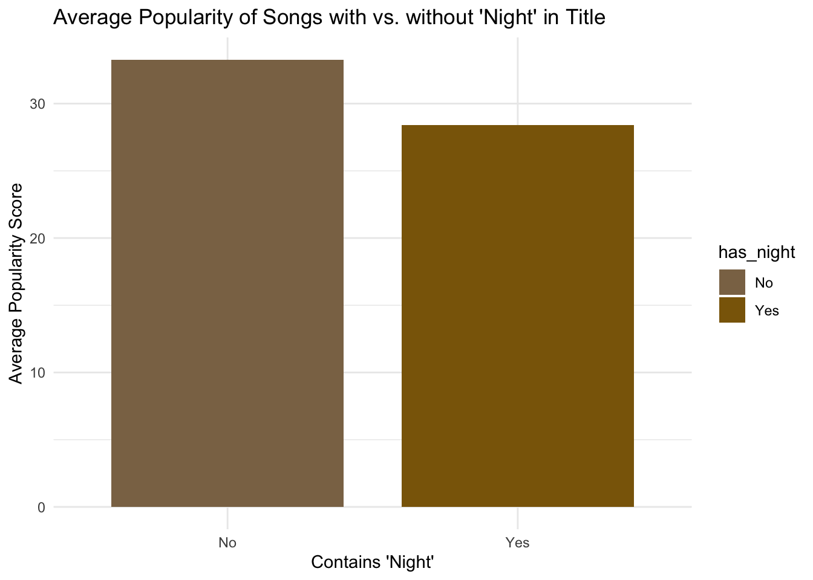

library(tidyverse)
library(dplyr)
library(ggplot2)
library(readr)
dataset_2 <- read_csv("~/FODS-project2/dataset 2.csv")
spotify <- dataset_2Spotify Patterns
Analysis of Word Patterns in Songs from Spotify Dataset
The dataset that I am using contains a large array of Spotify tracks, spanning over 100 genres and almost 75000 unique tracks. The data was published on Kaggle by Maharshi Pandya in 2022. It is titled “Spotify Tracks Dataset”
This is a preview of the data and its variables.
spotify |>
head(1)# A tibble: 1 × 21
...1 track_id artists album_name track_name popularity duration_ms explicit
<dbl> <chr> <chr> <chr> <chr> <dbl> <dbl> <lgl>
1 0 5SuOikwiR… Gen Ho… Comedy Comedy 73 230666 FALSE
# ℹ 13 more variables: danceability <dbl>, energy <dbl>, key <dbl>,
# loudness <dbl>, mode <dbl>, speechiness <dbl>, acousticness <dbl>,
# instrumentalness <dbl>, liveness <dbl>, valence <dbl>, tempo <dbl>,
# time_signature <dbl>, track_genre <chr>To begin, I want to see find the frequency that each artist and each album appears.
artist_freq <- spotify |>
count(artists, sort = TRUE)
album_freq <- spotify|>
count(album_name, sort = TRUE)Next, we want to see the top 10 most frequently appearing artists and top 10 most frequently appearing albums.
top10_artists <- head(artist_freq, 10)
top10_albums <- head(album_freq, 10)Finally, we can plot these findings on bar charts.
ggplot(top10_artists, aes(x = reorder(artists, n), y = n)) +
geom_bar(stat = "identity", fill = "green") +
coord_flip() +
labs(title = "Top 10 Most Frequent Artists", x = "Artist", y = "Count")
ggplot(top10_albums, aes(x = reorder(album_name, n), y = n)) +
geom_bar(stat = "identity", fill = "green") +
coord_flip() +
labs(title = "Top 10 Most Frequent Albums", x = "Album Name", y = "Count")
Next, lets look at the song titles. The data set contains a column “popularity_score” that is calculated by spotify software. We want to to see how having certain “buzz words” in a song title affects the songs popularity score.
To do this lets first find the words that appear the most frequently in the song titles.
song_titles <- tolower(spotify$track_name)
words <- str_extract_all(song_titles, "\\b\\w+(?:'\\w+)?\\b")|>
unlist()|>
as.data.frame()|>
setNames("word")|>
count(word, sort = TRUE)|>
#filter for articles and pronouns
filter(!(word %in%
c("the", "a", "of", "and", "you", "me", "i", "to", "my" )))|>
arrange(desc(n))|>
head(50)In the data set, track names contain descriptions for the track such as “live”, “remix”, or “remaster”, which are not necessarily words included in the song title, though they come up as being the most common words. Still, we can see from this table that words like “love”, “Christmas”, “time” and “night” are among the top 50 most common words in song titles.
With this, we can look to see if having one of these common “buzz words” in a song title contributes to the popularity score of a given song.
spotify <- spotify |>
filter(!is.na(track_name)) |>
mutate(has_love = ifelse(str_detect(track_name, regex("\\blove\\b", ignore_case = TRUE)), "Yes", "No"))
popularity <- spotify |>
group_by(has_love) |>
summarise(avg_popularity = mean(popularity, na.rm = TRUE))
popularity |>
ggplot(aes(x = has_love, y = avg_popularity, fill = has_love)) +
geom_bar(stat = "identity", width = 0.8) +
labs(title = "Average Popularity of Songs with vs. without 'Love' in Title",
x = "Contains 'Love'",
y = "Average Popularity Score") +
scale_fill_manual(values = c("Yes" = "magenta", "No" = "lightblue")) +
theme_minimal()
From this, we can see songs that contain the word “love” tend to have a higher popularity score on average. Now lest do this with a few of the other most common words.
spotify <- spotify |>
filter(!is.na(track_name)) |>
mutate(has_christmas = ifelse(str_detect(track_name, regex("\\bchristmas\\b", ignore_case = TRUE)), "Yes", "No"))
popularity <- spotify |>
group_by(has_christmas) |>
summarise(avg_popularity = mean(popularity, na.rm = TRUE))
popularity |>
ggplot(aes(x = has_christmas, y = avg_popularity, fill = has_christmas)) +
geom_bar(stat = "identity", width = 0.8) +
labs(title = "Average Popularity of Songs with vs. without 'Christmas' in Title",
x = "Contains 'Christmas'",
y = "Average Popularity Score") +
scale_fill_manual(values = c("Yes" = "red", "No" = "chartreuse")) +
theme_minimal()
spotify <- spotify |>
filter(!is.na(track_name)) |>
mutate(has_night = ifelse(str_detect(track_name, regex("\\bnight\\b", ignore_case = TRUE)), "Yes", "No"))
popularity <- spotify |>
group_by(has_night) |>
summarise(avg_popularity = mean(popularity, na.rm = TRUE))
popularity |>
ggplot(aes(x = has_night, y = avg_popularity, fill = has_night)) +
geom_bar(stat = "identity", width = 0.8) +
labs(title = "Average Popularity of Songs with vs. without 'Night' in Title",
x = "Contains 'Night'",
y = "Average Popularity Score") +
scale_fill_manual(values = c("Yes" = "darkgoldenrod4", "No" = "burlywood4")) +
theme_minimal()
As we can see from these charts, song names that contain the word “Christmas” have a much lower popularity score overall, while song names that contain the word “Night”, have just a slightly lower popularity score on average.
Using these findings, we can begin to look at the correlation between a songs title and its popularity, maybe leading to findings about how to title songs and what makes the BEST song title.